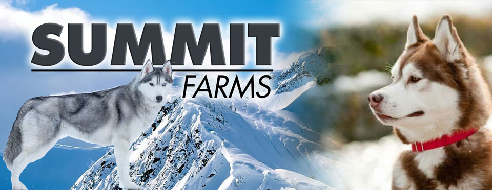
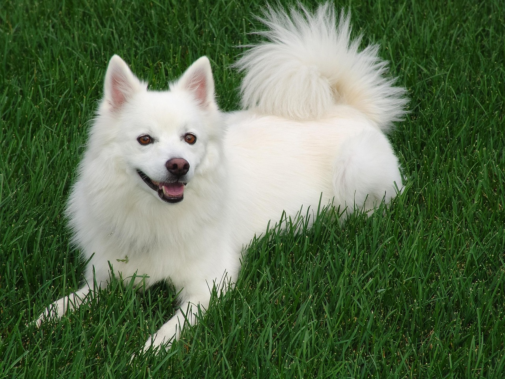

Haru
4 year old Alaskan Malamute. Friendly, loves playing and long walks.

Open Your Heart. Change Their World.
4 year old Alaskan Malamute. Friendly, loves playing and long walks.

2 year old Alaskan Klee Kai. Very active and talkative, needs daily exercise.

3 year old American Eskimo. Bright, loyal, and eager to love.

6 year old Seppala Siberian Sled. Gentle, hardworking, and deeply devoted.